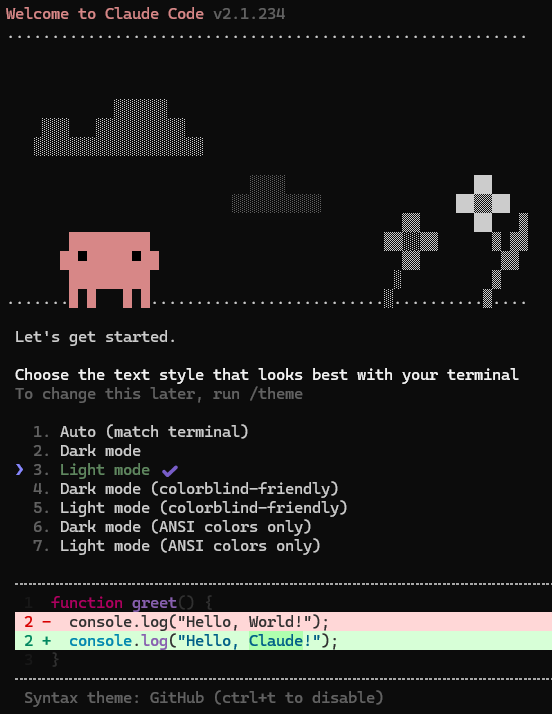
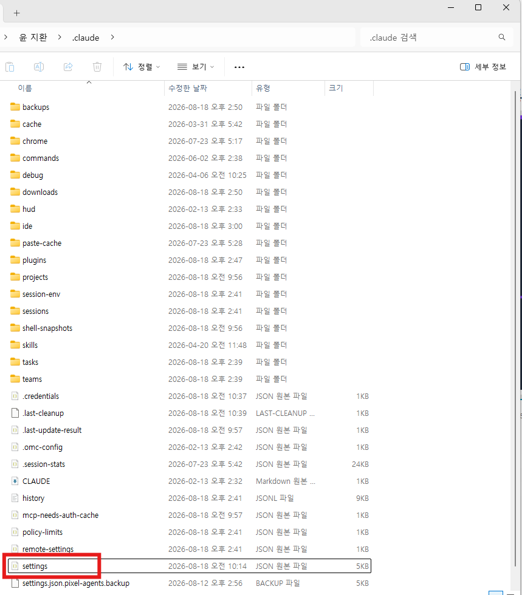
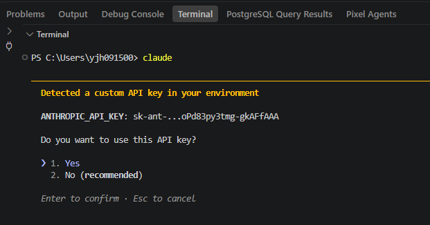
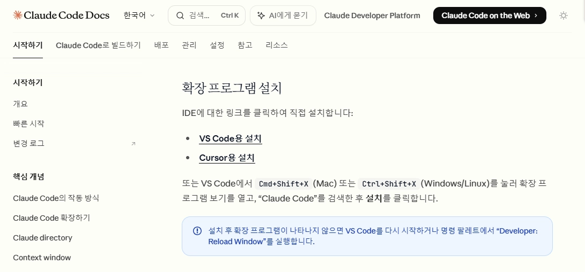
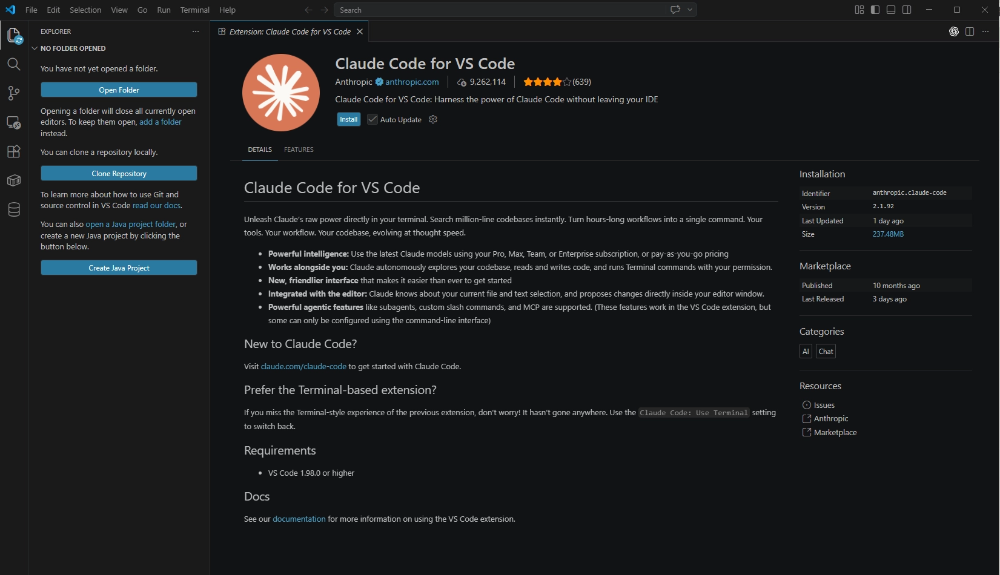
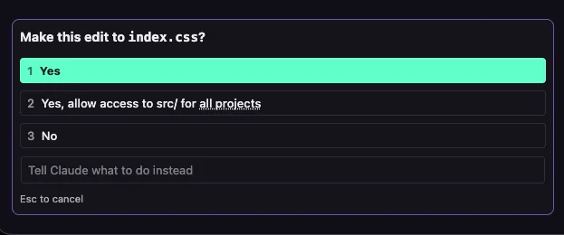

4 · Claude Code 설치¶
이 페이지에서 하는 일
- Claude Code CLI를 먼저 설치합니다
- 운영진에게 받은 설정 파일(settings.json)로 API 키와 모델을 등록합니다
- 연결이 확인되면 VS Code 확장을 설치합니다
- 파일을 고칠 때마다 뜨는 확인 창을 미리 꺼둡니다 (자동 승인)
오늘 말을 걸 상대인 AI 코딩 에이전트를 설치합니다. 이번 실습은 개인 계정 로그인이 아니라 운영진이 제공하는 API 키로 사용하므로, 확장부터 깔지 말고 아래 순서를 그대로 따라주세요.
순서가 중요합니다
CLI 설치 → 설정 파일 넣기 → 터미널에서 연결 확인 → VS Code 확장 설치 순서입니다. 확장을 먼저 설치하면 로그인 화면에서 막힙니다.
1. Claude Code CLI 설치¶
1. 검색 창에 PowerShell을 입력해 실행합니다.
2. 아래 명령을 붙여넣고 Enter. (③ Node.js 설치가 끝나 있어야 합니다)
npm install -g @anthropic-ai/claude-code
진행 표시가 지나가고 1~2분 안에 끝납니다.
3. 설치가 끝나면 PowerShell 창을 닫았다가 다시 열고, 아래 명령을 입력합니다.
claude

위와 같은 화면이 나오면 설치 완료입니다. 설치가 확인되었다면 우선 아무것도 설정하지 말고, 다음 단계로 넘어갑니다.
2. 설정 파일(settings.json) 넣기¶
운영진에게 받은 settings.json 파일에는 오늘 쓸 API 키와 모델 고정 설정이 들어 있습니다. 이 파일을 내 사용자 폴더의 .claude 폴더 안에 넣습니다.
settings.json은 어디서 받나요?
실습 자료 zip에는 들어 있지 않습니다. 아래 링크에서 압축 파일을 내려받으세요. 압축 비밀번호는 실습 당일 현장에서 공지합니다.
1. 위 링크에서 받은 압축 파일을 열어(비밀번호 입력) settings.json을 꺼내 다운로드 폴더에 둡니다.
2. 파일 탐색기를 열고(작업 표시줄의 노란 폴더 아이콘), 위쪽 주소창을 클릭한 뒤 아래를 그대로 입력하고 Enter. .claude 폴더가 열립니다.
%USERPROFILE%\.claude
3. 다운로드 폴더에 있는 settings.json을 이 폴더로 마우스로 끌어다 놓습니다. (창 두 개를 나란히 띄우면 편합니다) 폴더에 이미 settings.json이 있다는 안내가 뜨면 "덮어쓰기(파일 바꾸기)"를 선택하면 됩니다.

4. 위 그림처럼 .claude 폴더 안에 settings.json이 보이면 성공입니다. (다른 폴더·파일이 더 있어도 상관없습니다)
3. 터미널에서 연결 확인¶
이제 CLI를 한 번 실행해 API 키를 등록합니다.
1. PowerShell에 claude를 입력하고 Enter.
2. Detected a custom API key in your environment 라는 안내와 함께 이 키를 쓸지 물어봅니다. 방향키로 1. Yes를 고르고 Enter. (기본 선택이 No (recommended)여도 오늘은 Yes가 맞습니다)

3. 채팅 입력줄이 뜨면 연결 성공입니다. 아무 인사말이나 보내 답이 오는지 확인한 뒤, /exit를 입력해 종료합니다.
이렇게 나왔다면
- API 키 안내가 안 뜨고 로그인 화면이 뜬다 → 2번의 settings.json이 제 위치에 없는 것입니다. 경로를 다시 확인하세요.
Invalid API key등 오류가 뜬다 → 운영진에게 문의하세요. 당일 예비 키를 받을 수 있습니다.
4. VS Code 확장 설치¶
터미널 연결이 확인됐으니 이제 친숙한 채팅 화면으로 쓸 수 있게 VS Code 확장을 설치합니다.
1. 아래 링크에서 Claude Code 확장 페이지를 엽니다.
https://marketplace.visualstudio.com/items?itemName=Anthropic.claude-code
2. 열린 페이지에서 VS Code용 설치 버튼을 누릅니다.

3. VS Code가 열리며 확장 페이지가 뜹니다. Install 버튼을 눌러 설치합니다.

5. 잘 되는지 확인¶
설치가 끝나면 Ctrl+L (맥은 Cmd+L)을 누릅니다. 오른쪽 패널에 Claude Code 화면이 뜹니다.
앞에서 API 키를 이미 등록했기 때문에 로그인 화면 없이 바로 입력줄이 떠야 정상입니다.
이렇게 나오면 정상입니다
패널에 입력줄이 뜨고, 말을 걸면 답이 옵니다. 로그인 버튼이 보이지 않습니다.
이렇게 나왔다면
- 패널에 로그인 화면이 뜬다 → 3번의 터미널 연결 확인을 건너뛴 것입니다. 3번을 먼저 마치고 VS Code를 재시작하세요.
- 그래도 안 된다 → 운영진에게 문의하세요.
실습 폴더 여는 법
실습을 시작할 때는 VS Code 왼쪽 상단 Open Folder로 실습 자료가 있는 폴더를 열고, 그 상태에서 Claude Code에 질문하면 됩니다.
6. 확인 창이 뜨면¶
AI는 파일을 고칠 때마다 "이 파일을 수정해도 될까요?" 하고 물어봅니다. 오늘은 처음에 저장한 설정 파일(settings.json)에서 자동 승인 모드(Auto)를 세팅하였기 때문에 매번 묻지는 않지만, 파일에 따라 아래처럼 개별 확인 창이 뜰 수 있습니다.

- 1. Yes — 이번 한 번만 허용합니다.
- 2. Yes, allow access to ... — 같은 종류의 요청을 앞으로 이 폴더 또는 모든 프로젝트에서 다시 묻지 않고 허용합니다.
- 3. No — 거절합니다.
매번 승인 버튼을 누르는 것이 귀찮다면 2를 눌러 다시 묻지 않도록 할 수 있습니다.
자동 승인을 직접 켜고 끄는 방법은 부록 · 자동 허가 모드 설정에 정리해뒀습니다.
다 됐는지 스스로 확인하기¶
- PowerShell에서
claude --version이 숫자를 답한다 -
사용자 폴더\.claude\settings.json이 제자리에 있다 - VS Code에서 Claude Code 패널이 뜨고, 로그인 화면 없이 말을 걸 수 있다
- 터미널에서
python --version(맥은python3 --version) ·node --version이 숫자를 답한다
여기까지 됐으면 도구 설치는 끝입니다. 이제 실습 데이터를 준비합니다.